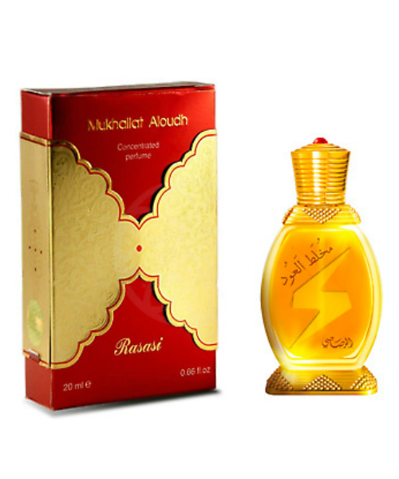
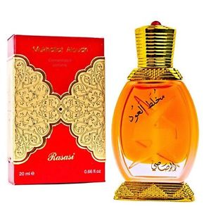

| White Attar | Gold Attar | Sun Attar |
|---|---|---|
| • White Oud by Al Mukhallat Al Oud is a Oriental Woody fragrance for women and men. Top notes are artemisia, mandarin orange, lemon and orange; middle notes are black currant, freesia and patchouli; base notes are musk, amber and tobacco.
PRICE: $190.00 |

• Gold Oud Edition by 24 is a Woody Spicy fragrance for women and men. ... The nose behind this fragrance is Jórdi Fernandez. Top notes are Cinnamon, Nutmeg, Italian Tangerine and Pink Pepper; middle notes are Guaiac Wood, Birch, Sandalwood, Cedar and Vetiver; base notes are vanilla bean, Amber, Agarwood (Oud) and Musk.
PRICE: $190.00 |

• The fragrance itself is a big, thick spicy opening and strange earthy saffron and leather, always familiar though, because resinous, labdanum and almost gourmand notes of cinnamon and ibq laced,.
PRICE: $190.00 |